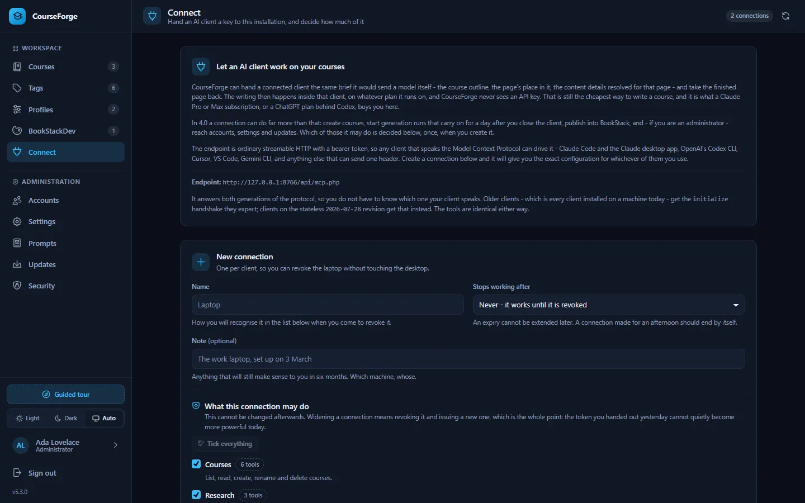

Automate with MCP
Connect an AI client
Drive CourseForge from Claude Code, the Claude desktop app, Codex, Cursor, VS Code or Gemini CLI over the Model Context Protocol - including writing whole courses on your own subscription.
CourseForge has a second front door: an MCP server at api/mcp.php. An AI client that speaks the Model Context Protocol connects to it and can do everything the browser can - create courses, design outlines, write pages, start runs, publish, and for an administrator manage accounts, settings and updates - through 107 tools.
It also turns the usual arrangement around. Instead of CourseForge calling a model with an API key, the client does the writing: it asks CourseForge for a page's brief, writes the page itself and stores it. That is how you use a Claude Pro or Max subscription - or any other client's own plan - with a hosted CourseForge, and it costs the server nothing.
Create a connection#
Open Connect in the sidebar, give the connection a name ("Laptop - Claude Code"), choose an expiry if you want one (up to a year), and optionally narrow it to some tool groups. Create it, and the screen shows the token once, with a ready-made setup line for each client.


The token starts with cf4_ and is stored only as a SHA-256 digest; lose it and you make another. Each connection is separate - revoking the laptop does not touch the desktop - and the screen shows when each was last used and how often.
Set up your client#
Replace the address and token with the ones the Connect screen gives you. The address is whatever the installation reports (mcp.public_url if set), usually https://your-install/api/mcp.php.
Claude Code#
claude mcp add --transport http courseforge https://your-install/api/mcp.php \
--header "Authorization: Bearer cf4_…"Run it in any directory; add --scope user to make the connection available in every project.
Claude desktop app#
In claude_desktop_config.json (Settings › Developer › Edit Config):
{
"mcpServers": {
"courseforge": {
"type": "http",
"url": "https://your-install/api/mcp.php",
"headers": { "Authorization": "Bearer cf4_…" }
}
}
}The desktop app's Settings › Connectors › Add custom connector takes a URL and nothing else, so the Connect screen also offers the token in the address:
https://your-install/api/mcp.php?token=cf4_…That form puts a secret into browser history and server logs; prefer the header wherever the client allows it. Custom connectors are reached from the public internet, so a CourseForge on localhost needs a real hostname or a tunnel for them.
OpenAI Codex CLI#
In ~/.codex/config.toml, or .codex/config.toml beside a project:
[mcp_servers.courseforge]
url = "https://your-install/api/mcp.php"
bearer_token_env_var = "COURSEFORGE_TOKEN"
# A page can take minutes to write, and the default is sixty seconds.
tool_timeout_sec = 1800Then export COURSEFORGE_TOKEN=cf4_… in your shell profile. The file holds no secret and is safe to commit.
Cursor#
In .cursor/mcp.json in a project, or ~/.cursor/mcp.json for all of them:
{
"mcpServers": {
"courseforge": {
"url": "https://your-install/api/mcp.php",
"headers": { "Authorization": "Bearer cf4_…" }
}
}
}Cursor expands ${env:NAME}, so you can write "Bearer ${env:COURSEFORGE_TOKEN}" and keep the token out of the file.
VS Code (Copilot)#
In .vscode/mcp.json. Note that VS Code calls the top-level object servers, not mcpServers:
{
"servers": {
"courseforge": {
"type": "http",
"url": "https://your-install/api/mcp.php",
"headers": { "Authorization": "Bearer cf4_…" }
}
}
}Gemini CLI#
In ~/.gemini/settings.json, or .gemini/settings.json beside a project. Gemini CLI calls the address httpUrl; a url would be read as an SSE endpoint, which this is not:
{
"mcpServers": {
"courseforge": {
"httpUrl": "https://your-install/api/mcp.php",
"headers": { "Authorization": "Bearer cf4_…" }
}
}
}Anything else#
Any client that speaks streamable HTTP and can send one header can drive CourseForge. To check a token from a terminal:
curl -sS 'https://your-install/api/mcp.php' \
-H 'Authorization: Bearer cf4_…' \
-H 'Content-Type: application/json' \
-d '{"jsonrpc":"2.0","id":1,"method":"tools/list"}'Start with get_next_step#
If you remember one tool, remember get_next_step. It reads the database and says which single call moves a course forward, why, and with what arguments. Because it works the answer out every time, it is right after a restart, a lost context window or a change of client - there is nothing to remember and nothing to resume. whoami is the other first call: who the connection belongs to, its role, and whether the scheduler is running.
In practice you rarely call either yourself. You say "write the next three pages of my machine learning course in CourseForge", and the client loops brief → write → store on its own.
Guided prompts#
Three prompts start a whole job without anybody having to explain the order. In Claude Code they appear as slash commands:
| Prompt | What it does | Arguments |
|---|---|---|
/mcp__courseforge__build_a_course |
Take a subject and write a complete course from it - outline, every page, and optionally publish it. CourseForge hands over the briefs and stores the results; the writing happens here, so no AI account has to be configured in CourseForge and nothing is spent on one. | topic, name (optional) |
/mcp__courseforge__continue_a_course |
Pick up a course that is already started and take it as far as it will go. Works whether it was left after the outline, half written, or finished but unpublished. | course_id (optional) |
/mcp__courseforge__review_a_course |
Read a finished course and say what is wrong with it - gaps, repetition, pages that contradict each other, chapters in an order that does not teach. Changes nothing. | course_id (optional) |
Each tells the client to call get_next_step and do what it says, rather than reciting steps - which is right in every state, including a course somebody abandoned three weeks ago.
Two ways to write a course#
This is the one decision a model cannot work out from a tool description, which is why the server states it in its own instructions.
You write it. get_page_brief hands the client the same prompt CourseForge would send a model: the persona, the formatting rules, the content details resolved for that page, the course map with what every page owns, the page's place and scope, and its neighbours. The client writes the page and stores it with write_page. This spends nothing on the server: the work happens in the client, on your own plan, and CourseForge never holds a credential. A page written this way follows exactly the same rules as one written by the API, so a course can be half written each way and stay coherent.
The brief's shared parts - the course map and the chapter - come with ids. Pass them back as known_context on the next call and they are not sent again, so the map enters the client's context once instead of once per page.
CourseForge writes it. start_run queues every unwritten page against the course's own AI account and keeps going after the client disconnects - in the background, or through the provider's batch queue at about half price. This spends real money on somebody's provider account, at scale: five hundred pages is five hundred requests. Call estimate_run first.
generate_page and generate_structure sit between the two: one call each, billed to the profile, blocking while the model works.
Building a course with no AI provider at all#
CourseForge needs an AI account only if you want CourseForge to do the writing (generate_structure, generate_page, start_run), and a profile only for publishing (which needs BookStack credentials). Everything else - the outline, every page, the content details, the tags - can be done by the client with four tools that need no model, no credential and no profile:
get_structure_brief → the client designs the outline → apply_structure
get_page_brief → the client writes the page → write_pageOn an installation that will never have an AI account, leave Profiles empty.
Scopes: narrowing a connection#
A connection may be narrowed to some of the tool groups, so a token that only writes pages cannot delete a course or read your settings.
| Group | Tools | What it is for | Who | Spends |
|---|---|---|---|---|
courses |
6 | List, read, create, rename and delete courses. | everyone | no |
research |
3 | Take the research assignment for a course, and store what searching the web found. The client does the searching, so nothing here spends anything. | everyone | no |
structure |
6 | Read the outline brief, write an outline, and have CourseForge design one itself. | everyone | yes |
pages |
8 | List and read pages, take a writing brief, store a finished page, and generate one through the profile's model. Also retitles pages and chapters and rewrites a chapter description, which edits the stored outline, because chapters and pages are matched by title. | everyone | yes |
details |
5 | The thirteen switchable elements and seven values, at course, chapter or page level. | everyone | no |
tags |
8 | The tag library and what is tagged with what. | everyone | no |
runs |
8 | Start, watch and cancel background and batch runs. This is the group that spends money at scale. | everyone | yes |
profiles |
25 | AI accounts, models and BookStack instances. Keys are never readable, but they can be replaced. | everyone | no |
publish |
5 | Push a course into BookStack and resolve cross references. | everyone | no |
account |
9 | Who you are connected as, your own password and display name, and your own connections. Never anybody else's. | everyone | no |
admin |
24 | Accounts, settings, the cron token, diagnostics and updates. Only ever available to an administrator. | administrators | no |
- Scopes narrow, they never widen. Every tool runs as the account the token belongs to, through the same access checks as the browser. A connection with no groups chosen gets everything its account is allowed.
adminis gated on the account, not the token. A normal account's connection cannot have it.accountis never narrowed away - "who am I" and "my own connections" are always available.- The role is read on every request, so demoting or disabling an account takes effect on its connections at once.
- A connection can create another (
create_my_connection), but never a wider one than itself: an omitted scope list means "the same as mine", and asking for a group the calling connection lacks is refused by name.
A tool the connection cannot see is reported as unknown rather than forbidden: the model needs to stop trying, not learn what exists.
Narrowing is worth doing even for a connection you trust completely: every tool's name, description and schema is context the model pays for. A page-writing connection with courses, pages and account puts a couple of dozen tools in front of the model instead of all 107.
Confirming before anything is lost#
One thing on this surface is irreversible: applying an outline that would delete pages that already have text. apply_structure works out what would be lost first and refuses unless the client confirms with confirm_removals.
A client on protocol revision 2026-07-28 that can ask its user a question gets the question instead: the call pauses (resultType: "input_required"), the client asks you, and repeats the call with the answer. The continuation is signed with HMAC-SHA256, bound to the connection, the account, the tool and a digest of the arguments, expires after fifteen minutes and can be redeemed once - a confirmation for deleting three pages cannot be reused for fifty. Older clients get the refusal naming confirm_removals, as they always did.
Protocol details#
CourseForge answers both eras of MCP on one URL: the stateless 2026-07-28 revision (server/discover, resultType, cacheable lists with ttlMs) and the four legacy revisions (initialize, session-style). Which era a request belongs to is read from the request itself and never remembered. The transport is plain HTTP POST; GET and DELETE answer 405.
Two client limits it works around:
- Claude Code truncates a server's instructions at 2 KB, so CourseForge's instructions put the useful part first and stay short.
- Claude Code truncates a tool result at 25,000 tokens by default, so tools that can return a lot -
get_coursewithinclude_contentis a whole book - declare a larger ceiling in the_metaslot the protocol reserves for it.
Security#
- The endpoint has no session and no cookie: a bearer token, checked on every request, and 401 for an unknown one. An installation with no connections has no way in at all.
- A request carrying a browser
Originthat is neither this host nor listed in Settings › MCP › allowed origins is refused with 403 - a defence against DNS rebinding. Claude Code, the desktop app and other command-line clients send noOriginand are unaffected. Add an origin only when you really have a browser-based client. - Settings › MCP can switch the endpoint off entirely.
- Signing in, redeeming an invite and first-run setup have no MCP equivalent: they create the credential a tool call needs.
revoke_my_connectionis the nearest thing to signing out, and it is permanent.
Troubleshooting#
| Symptom | Likely cause |
|---|---|
| Every request is 401 on Apache | Apache drops the Authorization header under CGI/FastCGI. The shipped .htaccess re-exposes it; check it is in place. Or use ?token=. |
| 403 "origin not allowed" | A browser-based client: add its exact origin to mcp.allowed_origins. |
| Tool calls time out while a page is written | Raise the client's tool timeout (Codex: tool_timeout_sec) and your server's own limit. |
| The client sees fewer tools than expected | The connection is narrowed, or the account is not an administrator. list_scopes shows the ceiling. |
| The Claude desktop app cannot reach a local install | Custom connectors connect from the internet. Use a public hostname or a tunnel - or the config-file setup above, which runs on your machine. |
The full list of tools, with every argument, is in the MCP tool reference.